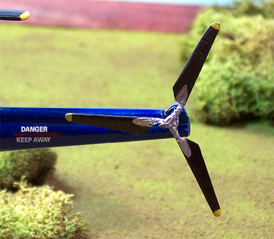

|

FM Models 1/48 Sikorsky H-5/S-51/H03S "Dragonfly"
Kit #6012
Collector's Market Value $37.95+
Images and text Copyright � 2005 by Matt Swan
Developmental Background
Sikorsky designed what would become the two-seat R-5 helicopter in response to a USAAF specification for a large observation helicopter. The USAAF interest was in part a response to the success of Sikorsky's R-4 following successful testing by the Coast Guard. The Sikorsky S-51 design followed the now classic helicopter configuration with a single main rotor and an anti-torque tail rotor to provide a helicopter having greater useful load, endurance, speed, and service ceiling than the R-4. The H designation stood for "Helicopter" and the R designation stood for "Rotary Wing". During this period of time there was little standardization in unit designation.
It first flew in February 1946 and was the first Sikorsky helicopter to receive approval for civilian use. Most S-51 helicopters however went into military service where they were often known under the designation H-5 Dragonfly by the U.S. Air Force and as the HO3S by the U.S. Navy. It was the first of the early helicopters with adequate lifting capacity and cabin space to permit transport and air-sea rescue duties.
Sikorsky Aircraft built about 65 H-5s, of various versions, for the USAAF, Navy, and Coast Guard. In 1948, two Sikorsky HO3S-1 helicopters were delivered to the newly formed Marine Helicopter Squadron One at Quantico. Feb. 9, 1948 marked the delivery of the first helicopters to the Marine Corps and that delivery changed the face of the Corps forever. Helicopter Observation Squadron 6, VMO-6, accompanied the 1st Marine Brigade when it arrived in Korea, and it began flight operations in Korea on 3 August 1950. US Navy HO3S-1 helicopters, originally intended for air-sea rescue, operated from most US aircraft carriers throughout the war.
During its service life, the H-5 was used for rescue and mercy missions throughout the world. It gained its greatest fame, however, during the Korean Conflict when it was called upon repeatedly to rescue United Nations' pilots shot down behind enemy lines and to evacuate wounded personnel from frontline areas. More than 300 H-5s had been built by the time production was halted in 1951. It proved so versatile for light transport, casualty evacuation, air-sea rescue, and rescuing downed pilots from behind enemy lines that the demand for them considerably exceeded the supply. The helicopter was also featured in the movie "Bridges at Toko-Ri" with Mickey Rooney.
The Kit
FM produced this model about six years ago and I snatch one up right away. I usually build propeller driven aircraft but have always had a soft spot for anything by Sikorsky as a result this became my first helicopter build - way back then. Some of the paint techniques are not quite up to my standards now and at the time I had not really experimented with panel line shading but it is still an interesting model.
The FM kit is a true multi-media kit and was the first kit I experienced that included white metal parts. The main rotor head and rotor shaft are white metal and the kit also included a good size tree of brass photo etched parts along with a small sprue of cast resin pieces. The dash is one of the resin pieces. Details were somewhat soft on the white metal items but very crisp and clean on the resin parts.

One thing that really surprised me when I opened the box was that the left and right fuselage pieces including all the windows short of the nose were cast as complete clear parts. Unfortunately the level of clarity on the windowpanes was less than perfect. Even two good coats of Future did not improve them significantly. All the plastic injection molded pieces displayed very heavy sprue gates and required a good bit of clean-up work prior to assembly.
The interior area of the model went together pretty well, I do recall that I had to shorten all the seat supports to get them to fit properly. The fuselage closed up well and needed no filler for the spinal seam. Putting the main rotor head together and the tail rotor was a bit of a pain - lots of little fiddly parts combined with vague directions and no previous experience building helicopters resulted in the main blades being installed backwards. After having completed the model I was informed of this error and had to go back, break the blades free, clean up the contact point and reinstall them. Fortunately it was not that difficult. What was more difficult was that about six months after completion my cats got into a wrestling match and slid into the model.
The resulting destruction to the model was significant. All the interior pieces were broken free and I had to cut the front nose cone off to reassemble the interior. Luckily none of those pieces were lost. Not so luckily, the tail rotor was totally smashed in the incident and one blade disappeared. I think the orange cat ate it cause he was kind of hacking and coughing for a day after that. I was not going through the cat box the next day looking for it either - no way, not me. Out came the Evergreen stock plastic and a new blade was manufactured. I think the reconstructive surgery went rather well, all these pictures were taken after the fact. There still is a slight chip in the paint on the pilot's boarding ladder from that adventure - battle scars.
The kit instructions were less than adequate. All we get is a single sheet printed on both sides that shows general construction. One of the four panels covers the historical background of the helicopter while the other three contain exploded views of the assembly process. There are no painting instructions through these steps. A lot of study is required. The kit includes decals for four different aircraft and these are rather good. You can model a French aircraft, a Navy or Marine unit and even a Japanese unit. The print registry was good, color density was good, they were nice and thin and behaved very nicely with Micro-Set and Micro-Sol. There is a separate half sheet with decal placement instructions and minimal exterior painting instructions. The primary exterior painting is done with Testors Blue. I don't think this is quite the correct shade of blue but at the time it made me happy. The black weather stripping around the windows is actually done with a very fine indelible magic marker. Some scratch building was involved also; I constructed all the ventral antenna posts from fuse wire and laid the antenna with invisible thread. The hoist cable is fine fuse wire but the hook is from the kit PE sheet.
Conclusions
Many pictures show this helicopter with the rotors folded and I think if I were to build another I would make that conversion. This particular model kit is extremely hard to find anymore however Belcher Bits makes one in 1/48 but that is a full resin kit and a bit more expensive but does include a pilot figure with top-hat ala Mickey Rooney. There are no aftermarket pieces available for this model so anything extra you want is going to have to be scratch built. I built this several years ago and was not terribly particular about paint color accuracy at the time - that has change since. If you are into helicopters one of these will definitely give you something different on the old modeling shelf. Ah well, she sure has taken a beating but still looks pretty good for her age. Thanks for enduring my rambling on here folks - happy modeling.
|
|